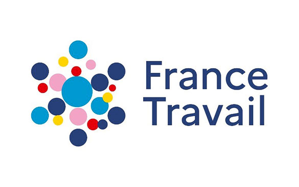
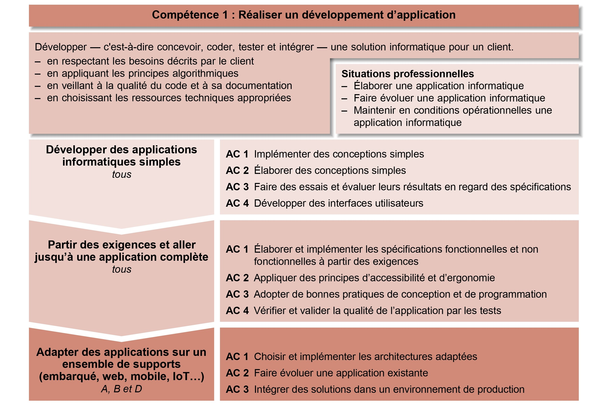

Stage - France Travail
Contexte

La Direction des Systèmes d'Information (DSI) de France Travail, anciennement Pôle Emploi, joue un rôle central dans la transformation numérique de l'institution. Avec plus de 1 500 internes et 1 600 externes répartis sur douze sites, la DSI est responsable de l'ensemble des systèmes informatiques qui soutiennent les services offerts aux demandeurs d'emploi et aux employeurs.
Durant un stage de 10 semaines, j'ai eu l'opportunité d'intégrer l'équipe Nitrozen sur le site de Strasbourg à Schiltigheim qui compte environ 160 employés. C'est l’équipe socle, c'est-à-dire qu'elle gère les principaux composants du département Formation. Ce département fabrique l’offre de service numérique permettant aux demandeurs d’emploi et aux actifs de trouver et de réaliser une formation pour développer leurs compétences et améliorer leur employabilité. Il fait partie de la Direction d'Inscription, d'Indemnisation et de l'Accompagnement (D2IA), qui assure la conception et le développement de l’ensemble des produits et services destinés aux Demandeurs d’Emploi-Actifs.
Cette expérience m'a permis de travailler sur des projets passionnants et d'acquérir de précieuses compétences dans le domaine de l'informatique et de la gestion de projet, tout en contribuant à la mission essentielle de France Travail.
Anotea
Compétence 1 : Réaliser un développement d’application
Anotea est une plateforme permettant de collecter les avis de demandeurs d’emplois ayant suivis une formation. Crée en tant que startup d’état, au sein de l'incubateur de France Travail. Quelque années plus tard France Travail a repris le contrôle d’Anotea. La maintenance du produit reste assuré par un développeur. Aujourd’hui, en tant que développeur, j'ai consacré une part significative de mes efforts à faire évolué l'accessibilité aux standards de France Travail. Ces critères respectent la RGAA. Cette réglementation apporte une attention particulière aux besoins des utilisateurs souffrant de déficiences visuelles et musculaires, comme les daltoniens ou les personnes atteintes de Parkinson.
En effet suite a un audit, j’ai eu plusieurs document à ma disposition, dont un rapport qui explique en détail les corrections à apporter, et une grille qui permet de suivre le pourcentage d’accessibilité en fonction des pages, des thématique et des statuts. Le taux initial de critères respectés était de 38 %.
En ce concerne l’initialisation du développement de l’application, j’ai installé, avec de l’aide, les outils nécessaires pour le développement. En effet, j’ai commencer par configuré Git via WSL en raison de problèmes de compatibilité avec Windows et le proxy France Travail.
Ensuite, pour démarrer l’application en local, il faut lancer 4 serveurs différent :
- Le serveur de mail MailHog avec Docker
- Le serveur backend avec NodeJS
- Le serveur frontend avec React
- La serveur de base de donné en MongoDB
Quelque une des taches réalisé (niv 2 | AC1-2) sont :
- Résolution de problèmes de contraste de couleur
- Résolution de titres en double pour les personnes utilisant des lecteurs d’écran
- Gestion du focus dans les pop-ups
- Veille à ce que le focus clavier soit initialement sur le premier élément interactif lors de la navigation entre les pages
- Amélioration de la conformité des widgets, permettant une navigation au clavier plus fluide
- Ajout de menus déroulants pour les graphiques en ligne de statistiques visibles seulement pour les utilisateurs équipés d’un lecteur d’écran
- Gestion des erreurs des formulaires
- Réécriture complète d’un composant React (ReactSelect) selon les règles du RGAA, en raison de l’impossibilité de le rendre accessible
- En dehors de l’accessibilité: Ajoute d'un filtre qui permet de choisir une période dans la partie statistique (niv 3 | AC 2).
Grâce à ces efforts, le score d'accessibilité a atteint 100%, assurant une expérience utilisateur plus inclusive et conforme aux normes légales. Une fois, fini a fallu faire des essais et évaluer les résultats de toutes les fonctionnalités pour s’assurer qu’il n'y ait aucune régression en regard des spécifications (niv 1 | AC 3). Seulement après, j’ai intégré la branche accessibilité donc les solutions à la branche master qui est l’environnement de production (niv 3 | AC 3) . 
Scrum Master
Compétence 5 : Conduire un projet
En tant que Scrum Master, j'ai joué un rôle dans l'application de la méthode Agile au sein de l'équipe. Chaque jour, j'ai animé la mêlée matinale, une réunion essentielle pour synchroniser l'équipe et identifier les obstacles, ce qui m'a permis de piloter le maintien du projet en condition opérationnelle. Pour ce faire, j'ai posé des questions pertinentes, fait remonter les user stories prioritaires et/ou bloquantes, rappelé certaines tâches annexes et assuré une conclusion claire. Il est arrivé plusieurs fois que certains développeurs ne soient pas présents, j’ai donc dû adapter le système d’information à la situation en assignant les tâches urgentes à d'autres personnes (niv 3 | AC 3).
J'ai collaboré étroitement avec un autre Scrum Master pour comprendre le fonctionnement de Jira, la gestion des features et des user stories, ainsi que l'animation des différentes réunions. Suite à cela, j’ai quotidiennement utilisé cet outil de gestion de projet pour définir et mettre en œuvre une démarche de suivi de projet (niv 1 | AC 2 – niv 2 AC 4). Il m'a également expliqué les besoins du client, du bureau métier et de l’utilisateur, ainsi que l’identification des acteurs et des différentes phases d’un cycle de développement selon la méthode Agile chez France Travail (niv 1 | AC 1-3). Ensemble, nous avons co-écrit un compte-rendu d'avancement du sprint pour le département formation et leurs supérieurs, mettant en lumière les progrès réalisés et les défis rencontrés.
Pour améliorer la dynamique d'équipe, j'ai animé des rétrospectives, en utilisant des techniques comme l’IceBreaker pour créer une ambiance propice à la discussion ouverte, recueillant des évaluations positives (niv 1 | AC 2). J'ai également participé à des réunions de revue de backlog en utilisant le planning poker pour estimer les nouvelles tâches présentées par les product owners (niv 2 | AC 3).
De plus, j'ai assisté à des réunions 5C pour identifier et résoudre les problèmes entravant le développement, et participé aux réunions Scrum de Scrum, où chaque équipe présente l'état d'avancement de ses features à la responsable du train formation. Lors de ces réunions, j'ai présenté les progrès de mon équipe, n'hésitant pas à faire des remarques pertinentes pour améliorer le processus.
En clôturant le Sprint 2 et en ouvrant le Sprint 3, j'ai utilisé des requêtes query sur Jira pour faciliter l'extraction des features et des user stories (niv 2 | AC 4). J'ai également participé à des réunions sur les anomalies organisées par les personnes de la validation logicielle, autrement dit les testeurs qui garantissent la qualité du produit.